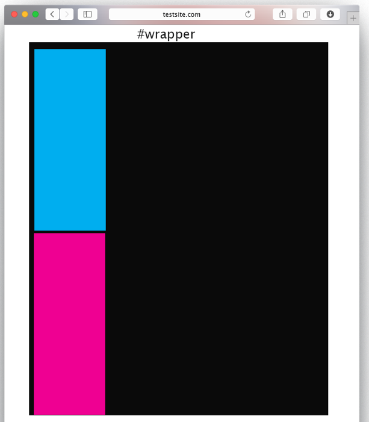
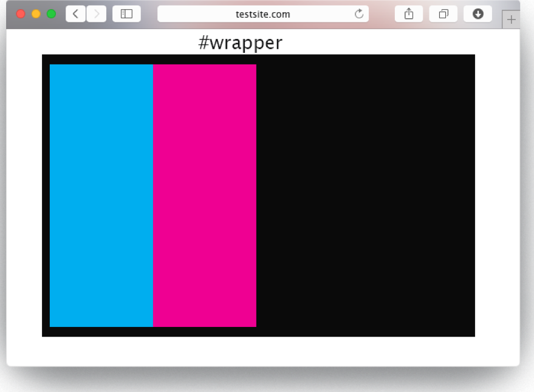
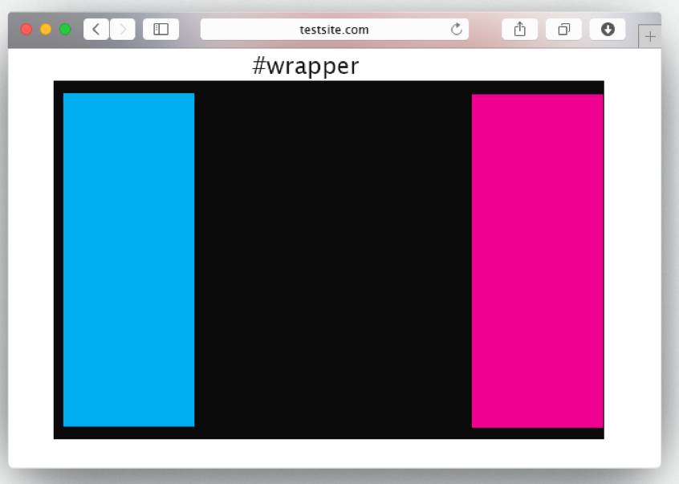

Week 4
Extending the knowledge of CSS selectors
- We can have different types of selectors
Element names as selectors
p { color: red; }If we want we can group selectors together. For instance, we might want all our headings to be grey
h1, h2, h3, h4, h5, h6 { color: grey; }We can have class
.and id selectors#.section { font-size: 20px; } #footer { font-size: 10px; }
CSS Pseudo-elements
Rather than having to apply class and id's to elements, we can save ourself time by targeting them using an elements children by using a
pseudo-elementh1:before { content:url(smiley.gif); }p::first-letter { color: #red; font-size: xx-large; }
CSS Pseudo-classes
- We can use these CSS classes to add special effects to elements themselves or a special state of the element
:hoverthe user has the mouse over the element:activethe element is being activated (e.g. clicked):visiteda link has been visited:focusthe element has the keyboard as its focus
Basic Page Layout
CSS display Property
CSS has two main ways of displaying elements
display: blockdisplay: inline
- An image is a inline element by default, however often you want an image to display on it's own line. In this case we can change the
displayproperty toblock For example, here's how we centre align an image:
.displayed { display: block; margin-left: auto; margin-right: auto; }We can then assign the display class to an image:
<img class="displayed" src="..." alt="..." />We can also use the shorthand margin property to achieve the same result:
img.displayed { display: block; margin: 0 auto; }
Margins
Margin values can be specified either on all sides or on individual sides
single value for each margin: top, left, bottom and right, e.g.
margin:10px;two values: 1st=top & bottom; 2nd=left & right, e.g.
margin:10px 5px;four values: top, right, bottom and left, e.g.
margin:10px 5px 15px 20px;
Width and Height
The width and height properties can be specified using percentage or length values (e.g. pixels or %)
Specifying widths of elements in % means they will will shrink or grow so they are always in scale with the screen size
p {width: 40%;}
Position Property
selector {
position: <value>
}
static – default value i.e. elements are laid out in the normal flow
relative – an element is moved relative to its place in the normal flow according to its top and left values
absolute – an element is taken completely out of the flow and then positioned with respect to the top and left of the first element that contains it. Used for sticky footers, try to avoid in any other case.
fixed – an element remains exactly where it is when the page is scrolled
Default static position of 2 DIVS

#wrapper{
width: 80%
}
#box1 {
width: 20%;
}
#box2 {
width: 20%;
}
Adding a float left
#wrapper{
width: 80%
}
#box1 {
width: 20%;
float: left;
}
#box2 {
width: 20%;
float: left;
}

Adding a float to the left and right
#wrapper{
width: 80%
}
#box1 {
width: 20%;
float: left;
}
#box2 {
width: 20%;
float: right;
}
